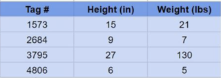

Tables, Rows, and Columns:
Relational databases store data in tables that organzie information into rows and colums.
Each table represents a specific type of data such as customers, products, or orders.
Columns define the type of information stored in each row, such as name, age, or price.
Each row represents a single record or entry in the table, while each column stores a specific type of information such as name, age, or price.
SQL:
SQL (Structured Query Language) is used to interact with relational databases.
It allows users to store, retrieve, update, and delete data within database tables.
SQL works by sending queries to the database, which then returns the requested information.
SQL is used by many relational database systems such as MySQL and Oracle.
Example of Relational Databases:
Here we have an example of a relational database that contains information about dogs.
Each row represents a different dog, and each column represents a specific attribute such as its name, breed, color, or age.
The first column contains a unique identifier for each dog, called the tag number.
This structure makes it easy to organize, search, and retrieve information about each dog.

Tag #
Name
Breed
Color
Age
1573
Fido
Beagle
Brown/White
1.5
2684
Rex
Pekingese
White
9
3795
Bubbles
Rottweiler
Black
5
4806
Cujo
Chihuahua
Gold
4
Example SQL Query:
SELECT Name, Breed
FROM Dogs
WHERE Age > 3;
This SQL query returns the names and breeds of all dogs older than 3 years.